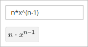
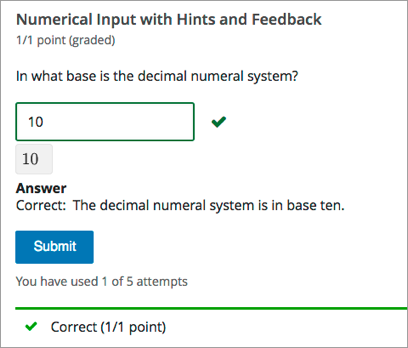
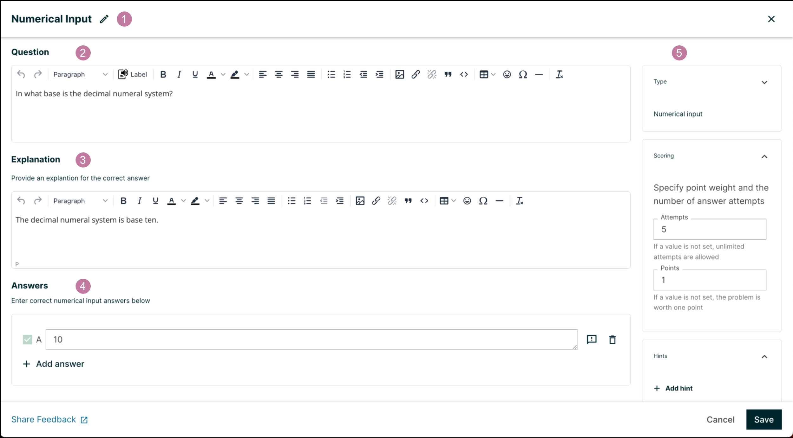
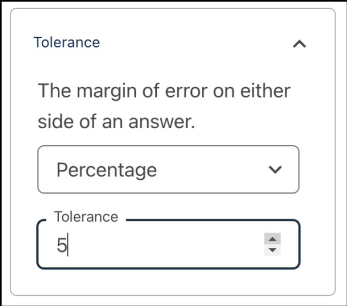
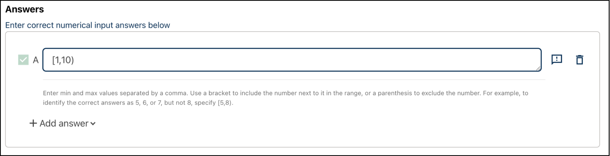
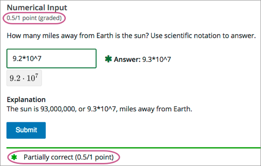
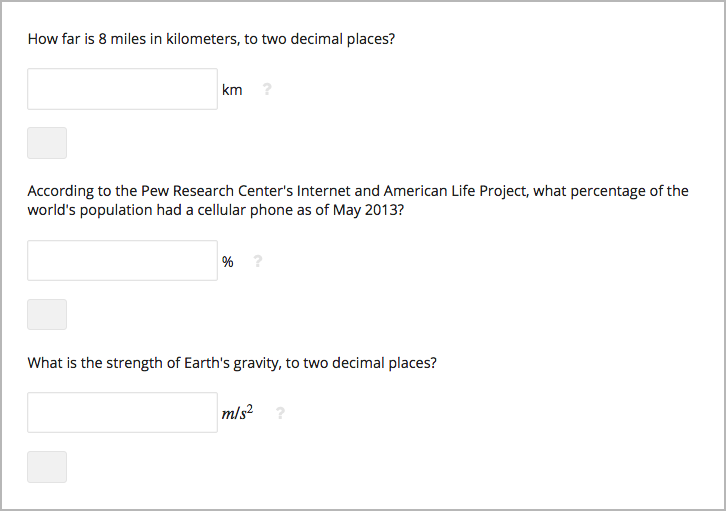

10.25. Numerical Input Problem#
Note
EdX offers full support for this problem type.
The numerical input problem type is a simple problem type that can be added to any course. At a minimum, numerical input problems include a question or prompt and a response field for a numeric answer. By adding hints, feedback, or both, you can give learners guidance and help when they work on a problem.
For more information about the simple problem types, see Working with Problem Components.
10.25.1. Overview#
In numerical input problems, learners enter numbers or specific and relatively simple mathematical expressions to answer a question. The LMS automatically converts the answer that learners enter into a symbolic expression that appears below the response field.
Responses for numerical input problems can include integers, fractions, and constants such as pi and g. Responses can also include text representing common functions, such as square root (sqrt) and log base 2 (log2), as well as trigonometric functions and their inverses, such as sine (sin) and arcsine (arcsin). For these functions, learners enter text that is converted into mathematical symbols. The following example shows a response entered by a learner and the numerical expression that results.
For more information about how learners enter expressions, see learners:Math Formatting in the EdX Learner’s Guide or Completing Mathematical and Scientific Assignments in the Open edX Learner’s Guide.
Some of the options for numerical input problems include the following.
You can specify a correct answer explicitly or use a Python script.
You can specify a margin of error, or tolerance, for the answers to numerical input problems so that learners’ responses do not have to be exact.
Note
You can make a calculator tool available to your learners on every unit page. For more information, see Calculator Tool.
10.25.1.1. Example Numerical Input Problem#
In the LMS, learners enter a value into a response field to complete a numerical input problem. An example of a completed numerical input problem follows.
10.25.2. Adding a Numerical Input Problem#
You add numerical input problems in Studio by selecting the Problem component. In the problem editor, select the Numerical Input option. Fill in the fields on this screen to create your problem.
{kind=link}
Creating a numerical input problem is as simple as:
Editing the Display Name. Click the pen symbol to edit.
Filling in the Question field.
Filling in the Explanation field. When this is shown to learners is based on the selection in the Show answer panel on the right.
Filling in the Answer fields. For numerical input problems, only correct answers can be added here. Additional answers can be added by clicking the Add answer button. Answers can be deleted by clicking the trash can icon. Feedback can be provided for each answer. More information on feedback can be found in the following section.
Selecting and filling in any desired settings on the right.
Note
Only correct answers can be added to a numerical input problem.
If you have any questions on the specifics of using the simple editor, please check out The Simple Editor and Defining Settings for Problem Components.
10.25.2.1. Adding a Tolerance or a Range#
To give learners the option to receive full credit for a close approximation of the correct answer, and to support a wide range of possible correct numerical answers, you can specify a tolerance for the correct answer or a range of values to mark as correct for the numerical input problem type.
Note
You can either have a tolerance or an answer range for a numerical input problem. You cannot add both.
10.25.2.1.1. Adding a Tolerance#
You can specify a margin of error or tolerance for learner responses. You can specify a percentage or number. The tolerance settings panel can be found to the right of the editor.
{kind=link}
10.25.2.1.2. Specifying an Answer Range#
You can specify an answer range so that any learner response within that range is marked correct.
Add an answer range by selecting the Add answer range button from the Add answer dropdown. This option can only be selected if you only have one answer. This will replace your answer field with an answer range field.
{kind=link}
To format an answer range, you provide the starting and
ending values and then separate them with a comma character (,). You then
surround the range with bracket ([ ]) or parentheses characters (( )),
or a combination of one bracket and one parenthesis.
Use a bracket to include the number next to it in the range, as in a less than or equal to, or greater than or equal to, inequality.
Use a parenthesis to exclude the number from the range, as in a less than or greater than inequality.
For example, to identify the correct answers as 5, 6, or 7, but not 8, specify
[5,8). To identify the correct answers as 6, 7, and 8, but not 5, specify
(5,8].
10.25.2.2. Adding Feedback#
For an overview of feedback in problems, see Adding Feedback and Hints to a Problem. In numerical input problems, you can provide feedback for correct responses. If you define multiple correct responses, you can define feedback for each response. In numerical input problems, use feedback to reinforce the process used to arrive at the correct answer.
You can add answer-specific feedback for each answer in a numerical input problem. You can access the feedback panel shown below by clicking the button to the right of the answer text.

Simply enter your feedback message in this text field. It will display when the learner submits this answer.
Note
You cannot add feedback for an incorrect answer in numerical input problems. Add hints to guide the learners in the correct direction instead.
10.25.2.3. Adding Hints#
You can add hints to a numerical input problem using the simple editor or the advanced editor. For an overview of hints in problems, see Adding Feedback and Hints to a Problem.
In the settings panels on the right of the editor, you’ll find a Hints panel.

Click the Add hint button to add a new hint text field. To delete any hints you’ve added, click the trash can icon next to its respective hint field.
Note
You can configure any number of hints. The learner views one hint at a time and views the next one by selecting Hint again.
10.25.3. Editing Numerical Input Problems using the Advanced Editor#
If the simple editor is not enough to meet your needs, you can switch over to the advanced editor. In the setting panels on the right of the editor, click Show advanced settings, then scroll down and click Switch to advanced editor.
You can use the advanced editor to identify the elements of a numerical input problem with OLX. For more information, see Numerical Input Problem OLX Reference. To format equations, you can use MathJax. For more information, see MathJax for Mathematics.
You can see the OLX for the example problem from the Overview section below.
<problem>
<numericalresponse answer="10">
<label>In what base is the decimal numeral system?</label>
<formulaequationinput/>
<solution>
<div class="detailed-solution">
<p>Explanation</p>
<p>The decimal numeral system is base ten.</p>
</div>
</solution>
</numericalresponse>
</problem>
Note
You can begin work on the problem in the simple editor, and then switch to the advanced editor. However, after you save any advanced OLX changes you make in the advanced editor, you may not be able to cannot switch back to the simple editor.
10.25.3.1. Adding Feedback#
In the advanced editor, you configure feedback with the following syntax.
<problem>
<numericalresponse answer="Correct Answer">
<label>Question text</label>
<formulaequationinput />
<correcthint>Feedback for the correct answer</correcthint>
</numericalresponse>
</problem>
For example, the following problem has feedback for each answer.
<problem>
<numericalresponse answer="4">
<label>What is the arithmetic mean for the following set of numbers?
(1, 5, 6, 3, 5)</label>
<formulaequationinput />
<correcthint>The mean for this set of numbers is 20 / 5 which equals 4.</correcthint>
</numericalresponse>
</problem>
If you define multiple correct responses, you can define feedback for each response.
10.25.3.1.1. Customizing Feedback Labels#
By default, the feedback labels shown to learners are Correct and Incorrect. If you do not define feedback labels, learners see these terms when they submit an answer, as in the following example.
Incorrect: A pumpkin is the fertilized ovary of a squash plant and contains
seeds classifying it as a fruit.
You can configure the problem to override the default labels. For example, you can configure a custom label for a specific wrong answer.
Not Quite: Many people mistakenly think a tomato is a vegetable. However,
because a tomato is the fertilized ovary of a tomato plant and contains seeds
it is classified as a fruit.
In the advanced editor, you configure custom feedback labels with the following syntax.
<choice correct="true or false">Answer
<choicehint label="Custom Label">Feedback for learners who select this
answer.</choicehint>
</choice>
For example, the feedback for the following answer option is configured to use a custom label.
<choice correct="false">tomato
<choicehint label="Not Quite">Many people mistakenly think a tomato is a
vegetable. However, because a tomato is the fertilized ovary of a tomato
plant and contains seeds, it is a fruit.</choicehint>
</choice>
Note
The default labels Correct and Incorrect display in the learner’s requested language. If you provide custom labels, they display as you define them to all learners. They are not translated into different languages.
10.25.3.2. Adding Hints#
In the advanced editor, you add the <demandhint> element immediately before
the closing </problem> tag, and then configure each hint using the
<hint> element.
<problem>
.
.
.
<demandhint>
<hint>Hint 1</hint>
<hint>Hint 2</hint>
<hint>Hint 3</hint>
</demandhint>
</problem>
For example, the following OLX for a single select problem shows two hints.
<problem>
<multiplechoiceresponse>
.
.
.
</multiplechoiceresponse>
<demandhint>
<hint>A fruit is the fertilized ovary from a flower.</hint>
<hint>A fruit contains seeds of the plant.</hint>
</demandhint>
</problem>
10.25.3.3. Adding Multiple Correct Responses#
You can specify more than one specific, correct response for numerical input problems. To do this, use the advanced editor.
If you specify multiple correct responses, you cannot also specify a tolerance, a range, or a text string as correct answers. For example, when you define multiple correct responses, you can specify a numeric value for each correct answer but not a tolerance, range, or text string.
To specify an additional correct response in the advanced editor, within the
<numericalresponse> element add the <additional_answer /> element with an
answer="" attribute value.
<problem>
<numericalresponse answer="9.3*10^7">
<label>How many miles away from Earth is the sun?</label>
<description>Use scientific notation to answer.</description>
<additional_answer answer="9.296*10^7"/>
<formulaequationinput/>
</numericalresponse>
</problem>
10.25.3.4. Adding a Tolerance#
You can specify a margin of error or tolerance for learner responses. You can specify a percentage, number, or range.
To add a tolerance in the advanced editor you include a <responseparam>
element with a type="tolerance" attribute and a default attribute set
to either a number or a percentage value.
The following example shows a problem with a decimal tolerance.
<problem>
<numericalresponse answer="ANSWER (NUMBER)">
<label>Question text</label>
<responseparam type="tolerance" default=".02" />
<formulaequationinput />
</numericalresponse>
</problem>
The following example shows a problem with a percentage tolerance.
<problem>
<numericalresponse answer="ANSWER (NUMBER)">
<label>Question text</label>
<responseparam type="tolerance" default="3%" />
<formulaequationinput />
</numericalresponse>
</problem>
10.25.3.5. Specifying an Answer Range#
You can specify an answer range so that any learner response within that
range is marked correct. To format an answer range, you provide the starting
and ending values and then separate them with a comma character (,`). You
then surround the range with bracket ([ ]) or parentheses characters
(( )), or a combination of one bracket and one parenthesis.
Use a bracket to include the number next to it in the range, as in a less than or equal to, or greater than or equal to, inequality.
Use a parenthesis to exclude the number from the range, as in a less than or greater than inequality.
For example, to identify the correct answers as 5, 6, or 7, but not 8, specify
[5,8). To identify the correct answers as 6, 7, and 8, but not 5, specify
(5,8].
To specify a range in the advanced editor, you enter the complete, formatted
range in the <numericalresponse> element as the value for the answer
attribute: <numericalresponse answer="[5,8)"> or
<numericalresponse answer="(5,8]">.
10.25.3.6. Awarding Partial#
You can configure a numerical input problem to award partial credit to learners who submit an answer that is close or related to the correct answer. You must use the advanced editor to configure partial credit.
Note
Support for partial credit problems in courses on edx.org and edX Edge is provisional. Ensure that you test such problems thoroughly before releasing them to learners. For more information, contact your edX partner manager.
In the following example, the learner entered an answer that was close to the correct answer and received partial credit.
For an overview of partial credit in problems, see Awarding Partial Credit for a Problem.
You can use the following methods to award partial credit in a numerical input problem.
Note
You can use these methods of awarding partial credit individually or in combination.
10.25.3.6.1. Identifying Close Answers#
You can configure a numerical input problem so that answers that are close to the correct answer receive partial credit.
To do so, you configure the tolerance for incorrect answers. Learners receive partial credit for close answers based on the tolerance. By default, the tolerance is multiplied by 2 and the following rules are applied.
An answer within the tolerance receives 100% of the points for the problem.
An answer within or equal to 2x of the tolerance receives 50%.
An answer more than 2x the outside of the tolerance receives 0%.
You can optionally specify a different multiplier for the tolerance. For example, you could set the multiplier to 3. In this case, the following rules apply.
An answer within the tolerance receives 100% of the points for the problem.
An answer within or equal to 3x of the tolerance receives 50%.
An answer more than 3x outside of the tolerance receives 0%.
10.25.3.6.1.1. Configure Close Answers#
To configure a numerical input problem to award partial credit for close answers, you add the following attributes to the problem XML.
Add the
partial_credit="close"attribute to the<numericalresponse>element.You can use close answers in combination with a list. Set the attribute to
partial_credit="close,list".Optionally, add the
partial_rangeattribute to the<responseparam>element and set its value to the tolerance multiplier. If you do not set thepartial_rangeattribute, 2 is used as the tolerance multiplier.
For example, the following OLX shows a numerical problem that provides partial credit for close answers.
<problem>
<numericalresponse answer="9.3*10^7" partial_credit="close">
<label>How many miles away from Earth is the sun?</label>
<description>Use scientific notation to answer.</description>
<formulaequationinput/>
<responseparam type="tolerance" default="1%" partial_range="3"/>
</numericalresponse>
</problem>
10.25.3.6.2. Awarding Partial Credit for Answers in a List#
For some numerical input problems, mistakes do not help a learner arrive at the correct answer. For example, a small mistake can lead to negative instead of positive results, or to an answer that is off by a square root or numerical factor.
For these types of problems, you can configure a list of wrong answers that receive partial credit. Learners who submit answers that are on the list receive 50% of the problem’s points.
10.25.3.6.2.1. Configure a List#
To configure a numerical input problem to award partial credit for answers in a list, you add the following attributes to the problem XML.
Add the
partial_credit="list"attribute to the<numericalresponse>element.You can use a list in combination with close answers. Set the attribute to
partial_credit="close,list".Add the
partial_answersattribute to the<responseparam>element. Set its value to one or more answers that should earn 50% of the problem’s points. Separate multiple values by a comma (,).
For example, the following XML shows the numerical problem template updated to provide partial credit for a different answer.
<problem>
<numericalresponse answer="9.3*10^7" partial_credit="close">
<label>How many miles away from Earth is the sun?</label>
<description>Use scientific notation to answer.</description>
<formulaequationinput />
<responseparam partial_answers="150*10^6"/>
</numericalresponse>
</problem>
10.25.3.7. Adding Text after the Numeric Response Field#
You might want to include a word, phrase, or sentence after the response field in a numerical input problem to help guide your students or resolve ambiguity.
{kind=link}
To do this, you use the advanced editor.
In the problem, locate the formulaequationinput element. This element
creates the response field for the problem and is a child of the
numericalresponse element.
To add text after the response field, add the trailing_text attribute
together with the symbol or text that you want to use inside the
formulaequationinput element. An example problem follows with three
questions that use this attribute.
Note
You can use MathJax inside the trailing_text attribute, as the
third question in this example shows. You cannot use HTML inside this
attribute.
<problem>
<numericalresponse answer="12.87">
<label>How far is 8 miles in kilometers?</label>
<formulaequationinput trailing_text="km" />
</numericalresponse>
<numericalresponse answer="91">
<label>According to the Pew Research Center's Internet and American Life
Project, what percentage of the world's population had a cellular phone
as of May 2013?</label>
<formulaequationinput trailing_text="%" />
</numericalresponse>
<numericalresponse answer="9.81">
<label>What is the strength of Earth's gravity, to two decimal places?</label>
<formulaequationinput trailing_text="\(m/s^{2}\)" />
</numericalresponse>
</problem>
10.25.4. Numerical Input Problem OLX Reference#
10.25.4.1. Templates#
The following templates represent problems without, and with, a Python script.
10.25.4.1.1. Problem with No Tolerance#
<problem>
<numericalresponse answer="ANSWER (NUMBER)">
<label>Question text</label>
<description>Optional tip</description>
<formulaequationinput />
<correcthint>Feedback for the correct answer.</correcthint>
<solution>
<div class="detailed-solution">
<p>Explanation</p>
<p>TEXT OF SOLUTION</p>
</div>
</solution>
</numericalresponse>
</problem>
10.25.4.1.2. Answer Created Using a Script#
Note
The following example includes a Python script. When you add a script to a problem component, make sure that it is not indented. A “jailed code” error message appears when you save the problem in Studio if the script element is indented.
<problem>
<numericalresponse answer="$computed_response">
<label>Question text</label>
<description>Optional tip</description>
<responseparam type="tolerance" default="0.0001" />
<script type="loncapa/python">
computed_response = math.sqrt(math.fsum([math.pow(math.pi,2), math.pow(math.e,2)]))
</script>
<formulaequationinput />
<correcthint>Feedback for the correct answer.</correcthint>
<solution>
<div class="detailed-solution">
<p>Explanation</p>
<p>TEXT OF SOLUTION</p>
</div>
</solution>
</numericalresponse>
</problem>
10.25.4.2. Elements#
For numerical input problems, the <problem> element can include this
hierarchy of child elements.
<numericalresponse>
<label>
<description>
<formulaequationinput>
<additional_answer>
<correcthint>
<responseparam>
<script>
<solution>
<demandhint>
<hint>
In addition, standard HTML tags can be used to format text.
10.25.4.2.1. <numericalresponse>#
Required. Indicates that the problem is a numerical input problem.
The <numericalresponse> element is similar to the <formularesponse>
element used by the math expression input problem
type, but the <numericalresponse> element does not allow unspecified
variables.
10.25.4.2.1.1. Attributes#
Attribute |
Description |
|---|---|
|
Required. The correct answer to the problem, given as a mathematical expression. |
|
Optional. Specifies the type of partial credit given. |
Note
If you include a variable name preceded with a dollar sign
($) in the problem answer, you can include a script in the problem that
computes the expression in terms of that variable.
The grader evaluates the answer that you provide and the learner’s response in the same way. The grader also automatically simplifies any numeric expressions that you or a learner provides. Answers can include simple expressions such as “0.3” and “42”, or more complex expressions such as “1/3” and “sin(pi/5)”.
10.25.4.2.1.2. Children#
<label><description><formulaequationinput><additional_answer><responseparam><correcthint><script><solution>
10.25.4.2.2. <label>#
Required. Identifies the question or prompt. You can include HTML tags within this element.
10.25.4.2.2.1. Attributes#
None.
10.25.4.2.2.2. Children#
None.
10.25.4.2.3. <description>#
Optional. Provides clarifying information about how to answer the question. You can include HTML tags within this element.
10.25.4.2.3.1. Attributes#
None.
10.25.4.2.3.2. Children#
None.
10.25.4.2.4. <formulaequationinput>#
Required. Creates a response field in the LMS where learners enter a response.
Note
Some older problems use a <textline math="1" /> element instead of
<formulaequationinput>. However, the <textline math="1" />
element has been deprecated. All new problems should use the
<formulaequationinput> element.
10.25.4.2.4.1. Attributes#
Attribute |
Description |
|---|---|
|
Optional. Defines the width, in characters, of the response field in the LMS. |
|
Optional. Specified text to appear immediately after the response field. |
10.25.4.2.4.2. Children#
None.
10.25.4.2.5. <additional_answer>#
Optional. Specifies an additional correct answer for the problem. A problem can contain an unlimited number of additional answers.
10.25.4.2.5.1. Attributes#
Attribute |
Description |
|---|---|
|
Required. The alternative correct answer. |
10.25.4.2.5.2. Children#
correcthint
10.25.4.2.6. <responseparam>#
Specifies a tolerance, or margin of error, for an answer.
10.25.4.2.6.1. Attributes#
Attribute |
Description |
|---|---|
|
Optional. |
|
|
|
Optional. For partial credit problems of |
|
|
10.25.4.2.6.2. Children#
None.
10.25.4.2.7. <correcthint>#
Optional. Specifies feedback to appear after the learner submits the correct answer.
10.25.4.2.7.1. Attributes#
Attribute |
Description |
|
Optional. The text of the custom feedback label. |
10.25.4.2.7.2. Children#
None.
10.25.4.2.8. <script>#
Optional. Specifies a script that the grader uses to evaluate a learner’s
response. A problem behaves as if all of the code in all of the <script>
elements were in a single <script> element. Specifically, any variables
that are used in multiple <script> elements share a namespace and can be
overridden.
As with all Python, indentation matters, even though the code is embedded in XML.
10.25.4.2.8.1. Attributes#
Attribute |
Description |
|---|---|
|
Required. Must be set to |
10.25.4.2.8.2. Children#
None.
10.25.4.2.9. <solution>#
Optional. Identifies the explanation or solution for the problem, or for one of the questions in a problem that contains more than one question.
This element contains an HTML division <div>. The division contains one or
more paragraphs <p> of explanatory text.
10.25.4.2.10. <demandhint>#
Optional. Specifies hints for the learner. For problems that include multiple questions, the hints apply to the entire problem.
10.25.4.2.10.1. Attributes#
None.
10.25.4.2.10.2. Children#
<hint>
10.25.4.2.11. <hint>#
Required. Specifies additional information that learners can access if needed.
10.25.4.2.11.1. Attributes#
None.
10.25.4.2.11.2. Children#
None.